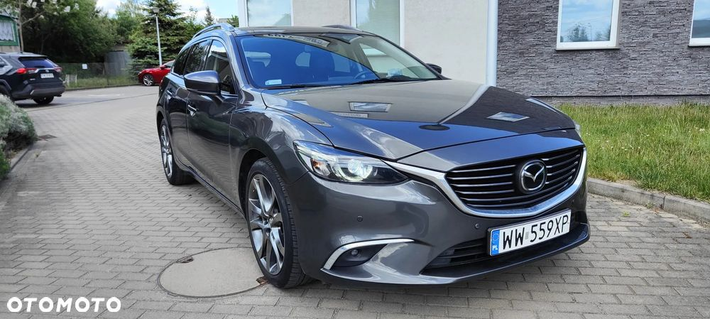
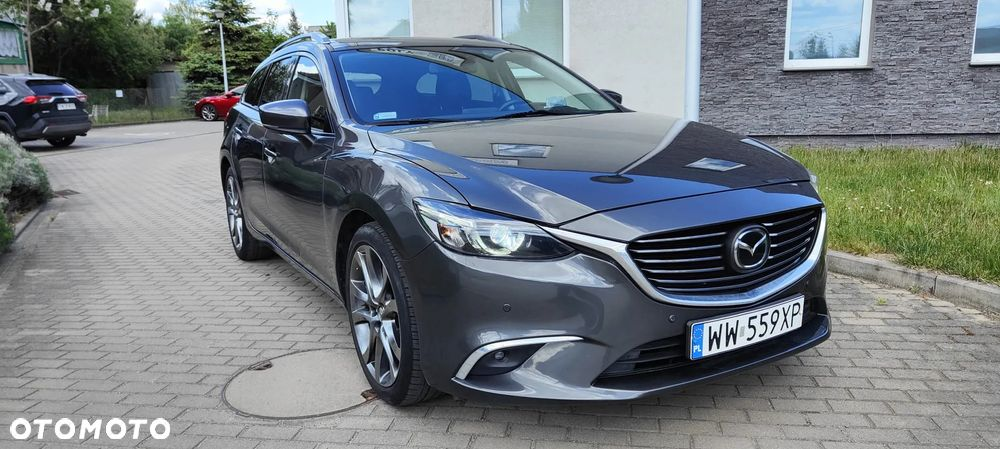
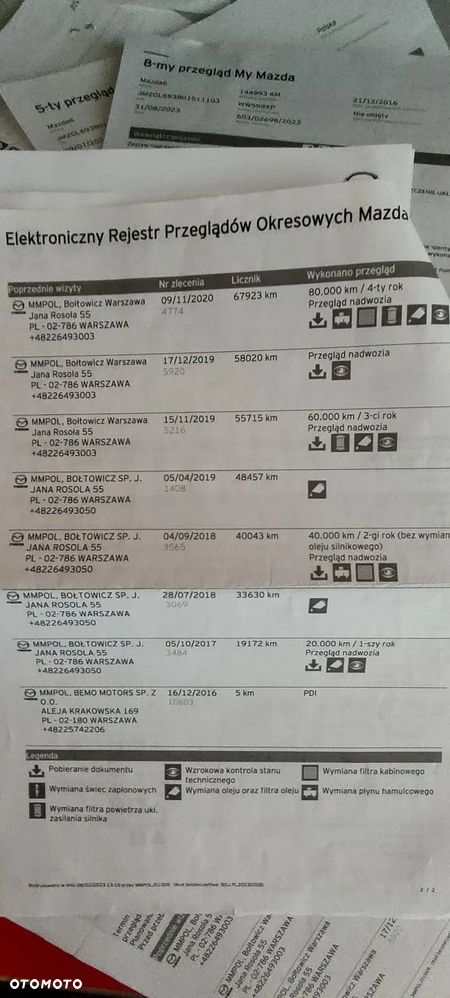
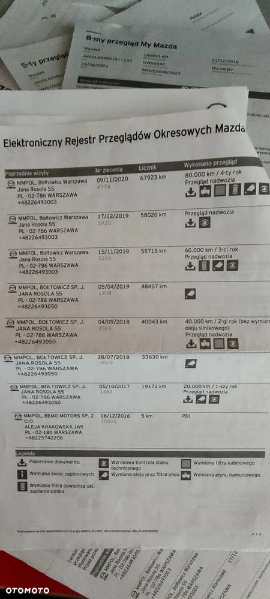

Na sprzedaż ładna i zadbana MAZDA 6 z najbardziej niezawodnym silnikiem benzynowym 2.5l i AUTOMATYCZNĄ SKRZYNIĄ biegów. Motor na łańcuszku rozrządu o mocy 192KM.
Autko bardzo dynamiczne (skrzynia z opcją SPORT), a zarazem ekonomiczne dzięki systemowi odzyskiwania energii z siły hamowania i-ELOOP.
Mazda była kupiona w polskim salonie, jestem drugim uzytkownikiem. Pierwszy właściciel najpierw miał w leasingu, po wykupieniu uzytkował dalej prywatnie.
Ładnie się prezentuje jest, zadbana i na bieżąco serwisowana.
- olej w silniku wraz z kompletem filtrów wymieniany co roku, czyli co ok 10tyś.km, ostatnio 5tyś. temu, przy 161tyśkm.,
- serwis automatycznej skrzyni biegów, wymieniony olej przy 100tyś.km
MAZDA jest w najbogatszej wersji wyposażenia SKYPASSION:
- lampy full-Led,
- PODGRZEWANA kierownica, fotele oraz tylna kanapa !!!
- skórzana tapicerka,
- bluetooth, USB, tempomat,
- automatyczna klimatyzacja,
- asystent pasa ruchu,
- czujniki z przodu i z tyłu oraz KAMERA cofania,
- świeżo po przeglądzie- 24.10.2025,
- wymienione klocki i tarcze hamulcowe (przod),
- 2 komplety koł ja alufelgach
- poduszki i kurtyny powietrzne, itd.
W historii odnotowana wymiana szyby, obcierka na rondzie i stluczka na drodze osiedlowej(lewy przod), po czym nie ma śladu.
Zapraszam na oględziny, negocjacje i jazdę próbną do Wrocławia.
 



 
